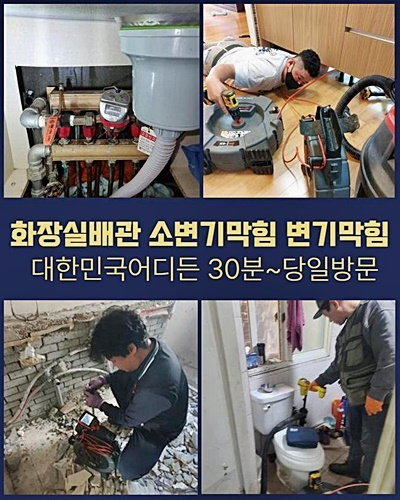
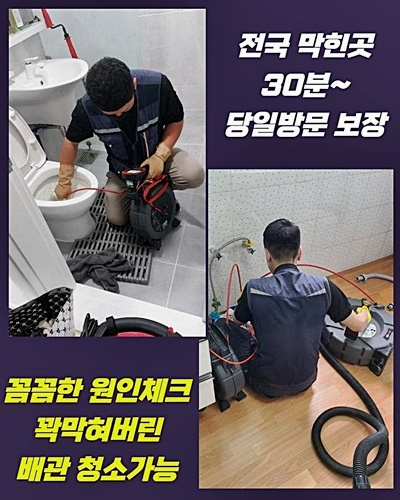
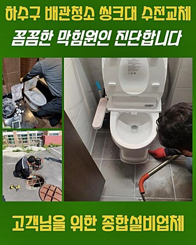
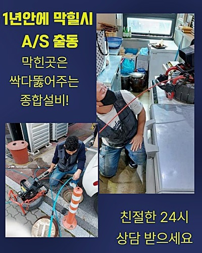
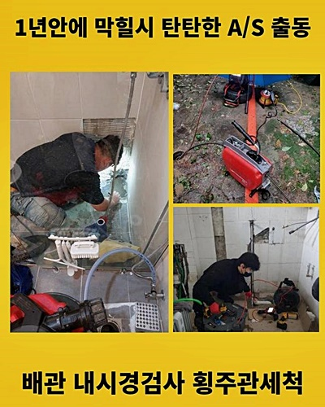
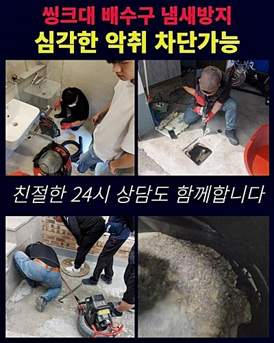

🏠 천안 청수동세탁실막힘 동면 하수구뚫는비용 배관공사
용인시 처인구 배관막힘 전문 시공 후기

📋 작업 개요
- 위치: 용인시 처인구, 수원시 영통구, 화성시 동탄
- 서비스 유형: 배관막힘, 고압세척, 내시경점검
- 작업 일시:
- 업체명: 하수구수사대 (010-5615-2118)
🔍 문제 상황
천안 청수동세탁실막힘 동면 하수구뚫는비용 배관공사
일상생활시 배수관은 필수로 사용하는 시스템이죠
하수관이 갑자기막혀 정상적으로 배수가되지 않으면 불편하겠죠
인터넷서칭으로 방법을연구하여 가벼운조치로 시도할순있지만 오염물로인해 완전하게 막힌상태라면 전문인의 도움을통하여 해결해보는것이 옳은방안입니다
저희업체를 통하여 문의하신분들 사례중 급작스레 발생한 막힘현상으로 상당한불편을 겪은경우도 있습니다
이번고객님은 리모델링에대한 공사가이루어진지 며칠도안되서 어떠한이유로 막히는일이 발현된건지 당혹스러워하셨죠
신속한작업을 요청하셨으며 저희업체에서는 전문기기들을 구비하여 빠른출동으로 내방드렸어요
대부분으로 가정집에선 화장실쪽이나 씽크대쪽에서 하수도가 막혀버리는일이 빈번히 발현되고있답니다
막힘이 발발되면 여러가지의 불편함들이 발생할수있죠
주방쪽에서 물이용이 어려워진다면 일상이어려운 상황으로 이어지게되겠죠
막힘현상을 처리하기위해 고객분께서 주말에 방문해주기를 원하셨으며 원하는 시간대에맞춰 방문했어요
주말하고 쉬는날까지도 포함해서 늦은밤이더라도 작업에 착수할수있기에 문의만주신다면 내방드릴준비가 되어있어요

🔎 원인 분석
💡 전문가 진단: 정밀 진단 장비를 사용하여 슬러지의 고착 여부를 판명하고 타격/세척 작업을 실시했습니다.
며칠전부터 배수상태가 느려지기시작했고 엊그제들어서 확실하게 막히게되었음을 알려주셨죠
셀프방법을 통해서 뚫는것을 시도했지만 일시로 해결만됐고 동일한현상이 발현하고있다고 말하셨어요
신속한 방문을드린후 싱크대배관을 살펴보았어요
막혀버렸다보니 기름이물이 쌓이게되었고 역류문제로까지 이어진것으로 볼수있었죠
하수구가 막혀버리게된 원인을알아내고 타파시키기위해 배관카메라를 활용해서 하수구내부를 확인했어요
배수구입구 주위에있는 이물의경우 쉽게없앨수있었지만 안쪽깊이에 자리잡고있는 오염물의경우 분쇄장비를 써서 바깥에 꺼내야했어요
불행중 다행이었던것은 오랜시간동안 쌓이지않았기에 깔끔한제거가 가능했습니다
자세히살펴보니 막고있었던 물체의형태는 장판조각인것이 파악되었는데 이게 도대체 왜이쪽에서 나오게된건지 알수가없었죠
의뢰자도 이물의정체를 모르시는 상태였으며 오염물을 확인하시더니 깜짝놀라셨는데요
샤프트장비로 분쇄를 진행해볼때는 전문기사의 실력까지 중요합니다
걱정마세요! 확실하고깔끔히 해결해드릴것을 약속합니다
다음현장으로 내방하여 상황을파악했더니 하수도에서 역류문제가 발현되고있었죠
막히는문제를 확실하게 뚫으려고한다면 확실한원인을 파악해야해요

🔧 작업 과정
여러번이고 알려드리지만 물이깔끔하게 흘러나가야하는데 물이넘쳐버리면 영업장이나 가정에서든지 곤란함을 초래시킨답니다
문제를봤더니 배관내부에서 발발된걸로 확인되었어요
현장경험과 노하우를통해 전문도구들을 써서 세심하게 작업해드렸죠
내시경과 플렉스샤프트와 같은 전문도구를 쓴다면 배관구조와 이물의위치까지 확실한 확인이가능하며 이러한과정을 통해서 작업하기전에 중요한정보들을 얻을수가있어요
이물질들이 쌓여있는경우 고약한냄새를 발생시키기에 빠르게대처할 필요가있어요
하수구내부상태를 체크한뒤 정확한조치를 취하여 역류증세를 해결할수있었죠
다음현장은 싱크대하수구가 막힌장소인데 빠른대처를 요청하셨는데요
음식을조리하거나 그릇들을 닦을때 물이흐르지않고 역류문제도 보이고있는 상황인것이라고 전해주셨죠
의뢰자의 일상영위를 망가뜨리는 역류문제가 지속적으로 발현될경우 큰피해를 일으킬수있기에 신속대응을하려고 막힌이유를 알아내기위해 스케일링과정에 들어가기로했죠
내시경끝쪽에는 카메라하고 랜턴까지 달려있기에 하수구깊은 부분까지도 점검해볼수있죠
싱크대막힘에서 막힘의주범인 슬러지이물은 혼자서직접 제거하기란 어렵죠
이런상태에선 물을통해 부피를늘린후 석션도구를 이용해서 흡입해내는 방식으로 시도가가능해요
고착된 이물질들이 쌓인경우라면 분쇄기계를 통해서 이물을분쇄하고 빨아올릴수있죠
하수구길이가 깊어도 세척이가능해요
내시경을사용해 꺾인부분까지도 파악해볼수있고 석션기와 샤프트기로 이물을소거시켜 원활한 배수상태로 만들어주죠
고객님에게 작업내용을 전달해보는것도 중요하답니다
하수도가막혔을때 방치하게될경우 심화문제로 발발되어 큰피해가 일어날수있으니 조속히 조치하시는걸 권유드릴게요
직접뚫어보고자 뾰족한물체로 하수구를 쑤셔보거나 주변에서 쉽게구하는 클리너용품들을 이용하는경우 일시해결로만 보실수있으실거에요
전문가에게 도움을요청해 어떤이유로 막혔는지 자세히파악해 알맞은조치를 취해야해요
그렇기때문에 하수구가막혔을땐 신속하고 전문적인조치가 요구되는것이죠


✅ 작업 완료
가벼운생각으로 일관하지마시고 문제발견즉시 해결하시는걸 권고드려요
심혈을기울여서 여러문제에대한 막힘현상을 완벽하게 처리할것을 약속드리겠습니다
만약에관련된 문제를보인다면 문의바래요
어떤지역이라도 60분안으로 도착해드릴수 있으며 작업내용에 대한것들을 분명하게 공개해드리니 염려않으셔도 된답니다
이밖으로도 궁금한게있으면 아무때나 전화주셔서 여쭈어도 괜찮으므로 편안하게 의뢰주시면 상세한응대로 맞이하겠습니다
앞으로발생할 하수도문제 저희업체와함께 해결해보는건 어떨까싶습니다



⚠️ 하수구 배관 막힘 예방 및 관리 가이드
- ✅ 머리카락, 비닐, 물티슈 등 물에 분해되지 않는 이물질은 절대 흘려보내지 마세요.
- ✅ 기름기 많은 식기는 설거지 전 키친타올로 먼저 기름때를 닦아내세요.
- ✅ 주기적으로 배수구에 뜨거운 물을 가득 부어주어 유지방 고착을 방지하세요.
- ✅ 작업 후 1년 이내 재발 시 무상 A/S 보증 서비스를 제공합니다.
💡 핵심 정리
- 확실한 장비 작업(내시경 점검 및 샤프트 스케일링)으로 원인을 뿌리 뽑습니다.
- 작업 후 1년 이내에 동일한 부위 재발 시 100% 무상 A/S 서비스를 보장합니다.
- 서울 · 경기 · 인천 전 지역에 24시간 언제든 긴급 출동할 수 있도록 항시 대기 중입니다.
❓ 자주 묻는 질문 (FAQ)
🚨 용인시 처인구 배관막힘 문제로 고민이신가요?
정확한 원인 진단과 확실한 시공으로 재발 없는 해결을 약속드립니다.
24시간 긴급 출동 | 서울 · 경기 · 인천 전지역 | 1년 내 재발 시 무상 A/S